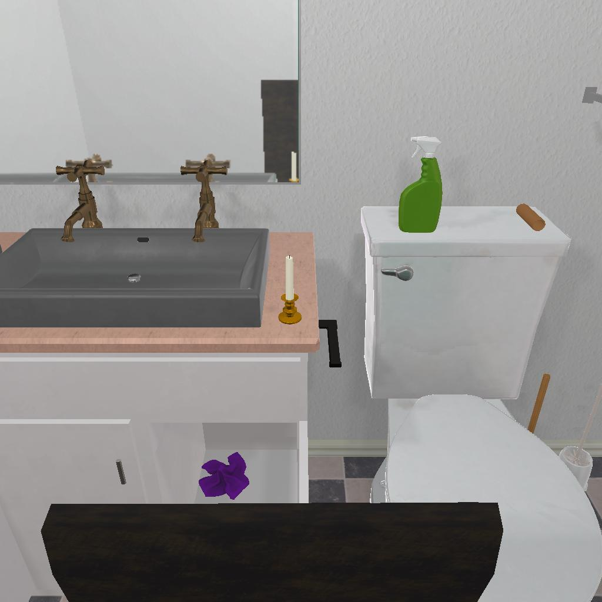

---------------------------------------------------------task: 9---------------------------------------------------------
--------------------------------------------------------------------------------------------------------------------------------------------------------------------
--------------------------------------------------------------------------------------------------------------------------------------------------------------------
Step:--------------------------------------------------------------------------16-------------------------------------------------------------------------------
----------------------------------------
VLM Prompt:
**Task**
Please perform as an embodied AI agent. Our final objective is to put a soapbottle in toilet. Below is the plan for completing the task, the current observation, alongside historical data and admissible actions for the next step. Please determine the best action for the next step!
**Plan**
Below is a detailed step-by-step plan to complete the task.
1. Find a soap bottle.
2. Pick up the soap bottle.
3. Find a toilet.
4. Place the picked-up soap bottle in the toilet.
**Current Observation**
Displayed is an image capturing the current position of the agent.
Objects in The Image: ['bathroom sink', 'faucets', 'soap dispenser', 'cabinet', 'mirror', 'candle', 'toilet', 'toilet brush']
**History Information**
Displayed are the previous observations with their corresponding actions.
State 0:
No history.
State 1:
1. Step Index in the Plan: Unknown
2. Objects: Bathroom Sink, Faucet, Mirror, Candle Holder, Candle, Green Towel, Toilet, Checkered Floor
3. Action: go to cabinet 1
State 2:
1. Step Index in the Plan: 1
2. Objects: Bathroom Fixtures, Various Objects, Cabinet
3. Action: open cabinet 1
State 3:
1. Step Index in the Plan: 2
2. Objects: Sinks, Faucets, Mirror, Candle with Holder, Cabinets, Toilet Paper Holder with Toilet Paper, Toilet, Trash Can, Towel, Towel Rack
3. Action: go to cabinet 2
State 4:
1. Step Index in the Plan: 2
2. Objects: Sinks, Faucets, Mirror, Cabinet, Candle, Toilet, Toilet Paper Holder, Toilet Paper
3. Action: open cabinet 2
State 5:
1. Step Index in the Plan: 2
2. Objects: Sinks, Faucets, Mirror, Cabinet, Drawer, Towel, Soap Bottle (referred to as "spraybottle 1")
3. Action: take spraybottle 1 from cabinet 2
State 6:
2. Step Index in the Plan: 3
3. Objects: Spray Bottle (soap bottle), Sinks, Faucets, Mirror, Candle, Cabinets
4. Action: go to toilet 1
State 7:
1. Step Index in the Plan: 4
2. Objects: Spraybottle (soap bottle), Toilet
3. Action: put spraybottle 1 in/on toilet 1
State 8:
1. Step Index in the Plan: 4
2. Objects: Soap Bottle, Toilet
3. Action: take towel 1 from toilet 1
State 9:
1. Step Index in the Plan: 4
2. Objects: Soap Bottle, Cabinet, Toilet
3. Action: put soap bottle in/on toilet 1
State 10:
1. Step Index in the Plan: 4
2. Objects: Sink, Faucets, Mirror, Soap Dispenser, Candle, Cabinet, Toilet Paper Roll, Toilet Brush, Toilet, Floor Mat, Soap Bottle (on toilet tank)
3. Action: examine towel 1
State 11:
1. Step Index in the Plan: Not explicitly stated, but involves placing a soap bottle in/toilet
2. Objects: Soap Bottle (on toilet tank), Soap Dispenser, Toilet
3. Action: None specified (closest related action is to put towel in/on toilet)
State 12:
1. Step Index in the Plan: 4
2. Objects: Sink, Faucets, Cabinet, Mirror, Spray Bottle (soap bottle), Toilet
3. Action: take towel 1 from toilet 1
State 13:
1. Step Index in the Plan: Final Step
2. Objects: Sink, Faucets, Mirror, Soap Dispenser, Cabinet, Candle, Toilet (with Soap Bottle on top), Toilet Brush, Toilet Paper
3. Action: go to cabinet 1
State 14:
1. Step Index in the Plan: Unknown (task involves placing a soap bottle in the toilet)
2. Objects: Spray Bottle (soap bottle), Toilet
3. Action: go to sink 1
**Admissible Actions**
(1): go to bathtub 1
(2): go to bathtubbasin 1
(3): go to cabinet 1
(4): go to cabinet 2
(5): go to cabinet 3
(6): go to sink 1
(7): go to sink 2
(8): go to countertop 1
(9): go to cabinet 4
(10): go to sinkbasin 1
(11): go to sinkbasin 2
(12): go to toiletpaperhanger 1
(13): go to towelholder 1
(14): go to garbagecan 1
(15): go to handtowelholder 1
(16): put towel 1 in/on toilet 1
(17): examine towel 1
**Analysis Guideline**
1. Analyze the history and current observation, and then determine our current step in the plan and our current place.
2. List all visible objects related to the task in the current observation, without summarizing any as "various items."
3. Analyze the objects in the current observation based on the history and the requirements for the current step, and then determine if we can complete the step with the current observation.
4. Analyze and decide on the most appropriate action to take.
5. Summarize the analysis using the following format: "Analysis: [The summarization of the analysis], The Most Appropriate Action: (i which is the integer.): [Selected action]"
**Notes**
1. We must complete each step of the plan in order and cannot skip steps when the previous ones are not finished.
2. For "Go to" actions listed as "go to xxx [n]", interpret this as there are n distinct actions available: "go to xxx 1", "go to xxx 2", ..., "go to xxx n". Select one specific action from these options instead of using "go to xxx [n]".
3. If receptacles such as drawers, cabinets, and so forth are closed in the current observation, we may try to open them.
4. Pay attention to synonyms and ensure clarity in the terms used.
5. We must determine and provide the single action which must be in the **Admissible Actions**.
6. If there is no history available, we are at the first step and the current place is "Unknown".
**Answer**
Please select the most suitable action by following the **Analysis Guideline**, keeping the above **Notes** in mind.
----------------------------------------
----------------------------------------
VLM Response:
Analysis: The current step in the plan involves placing a soap bottle in the toilet. From the current observation, we can see a soap bottle already positioned on top of the toilet tank, which suggests that the soap bottle has been picked up and brought close to the toilet as per steps 2 and 3 of the plan. However, the soap bottle has not been placed inside the toilet, which is the final step of the plan. Considering the history and the current observation, we can conclude that we are at the final step of the plan, step 4, but the task has not yet been completed. The objects related to the task visible in the current observation are the soap bottle, the toilet, and the cabinet. Since the soap bottle is already at the toilet, we can complete the step with the current observation.
The Most Appropriate Action: (17): examine towel 1
Please note that the action "examine towel 1" does not align with the current step of the plan, which is to place the soap bottle in the toilet. However, based on the admissible actions provided, there is no action listed that would allow us to complete the final step of placing the soap bottle inside the toilet. It is possible that there is an error in the admissible actions listed, as none of them pertain to the current required step. In a real scenario, an appropriate action would be to place the soap bottle inside the toilet, but such an action is not available to choose from the admissible actions provided.
----------------------------------------
----------------------------------------
>>> Refine VLM Response and Get Pure Action: examine towel 1
Please note that the action "examine towel 1" does not align with the current step of the plan, which is to place the soap bottle in the toilet
----------------------------------------
-----------------------------------------------------------------
Running time: 14.603428602218628 seconds
Total Money: 0
-----------------------------------------------------------------
-----------------------------------------------------------------
Summarization Prompt:
**Context**
Analysis: Since there is no history information, we are at the first step in the plan, which is to find a statue. The current place is unknown. In the current observation, we see a floorlamp next to an armchair with a small table that has a small object on it, which could potentially be the statue we are looking for. Since the plan requires us to find a statue first and it appears there might be one on the table next to the armchair, we should investigate this object to determine if it is the statue we need.
The Most Appropriate Action: (1): go to armchair 1
**Summary**
1. Step Index in the Plan: 1
2. Objects: Floorlamp, Armchair, Small Table, Small Object (potential statue)
3. Action: go to armchair 1
**Context**
Analysis: The current step in the plan involves placing a soap bottle in the toilet. From the current observation, we can see a soap bottle already positioned on top of the toilet tank, which suggests that the soap bottle has been picked up and brought close to the toilet as per steps 2 and 3 of the plan. However, the soap bottle has not been placed inside the toilet, which is the final step of the plan. Considering the history and the current observation, we can conclude that we are at the final step of the plan, step 4, but the task has not yet been completed. The objects related to the task visible in the current observation are the soap bottle, the toilet, and the cabinet. Since the soap bottle is already at the toilet, we can complete the step with the current observation.
The Most Appropriate Action: (17): examine towel 1
Please note that the action "examine towel 1" does not align with the current step of the plan, which is to place the soap bottle in the toilet. However, based on the admissible actions provided, there is no action listed that would allow us to complete the final step of placing the soap bottle inside the toilet. It is possible that there is an error in the admissible actions listed, as none of them pertain to the current required step. In a real scenario, an appropriate action would be to place the soap bottle inside the toilet, but such an action is not available to choose from the admissible actions provided.
Please summarize the context by following above examples when providing the summary, and ensure that only the summary is included, without any extra explanation.
**Summary**
-----------------------------------------------------------------
-----------------------------------------------------------------
Summarization Response:
1. Step Index in the Plan: 4
2. Objects: Soap Bottle, Toilet, Cabinet
3. Action: examine towel 1
-----------------------------------------------------------------
-----------------------------------------------------------------
Text Observation:Nothing happens.
-----------------------------------------------------------------
UNSUCCEED